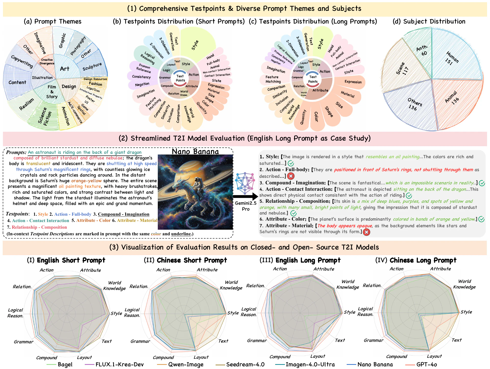
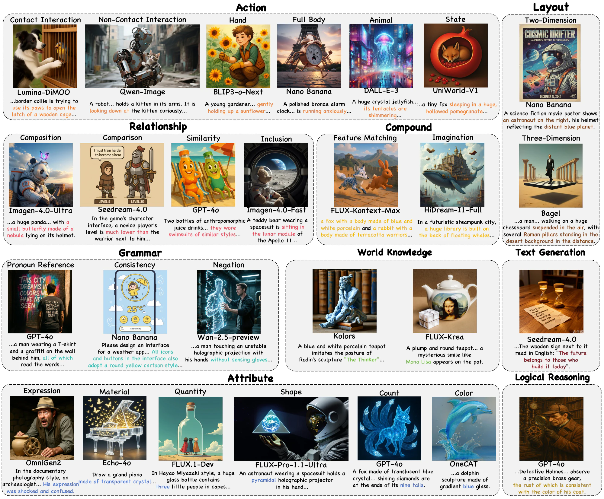
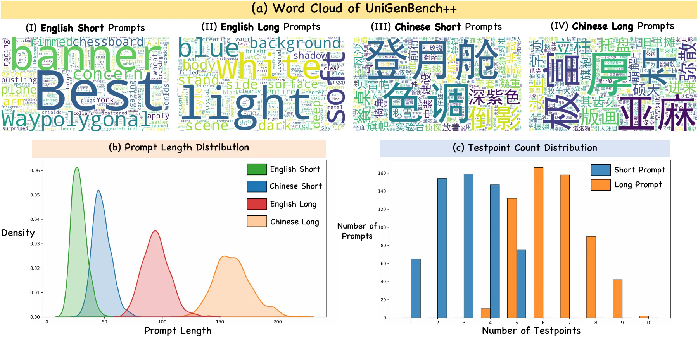
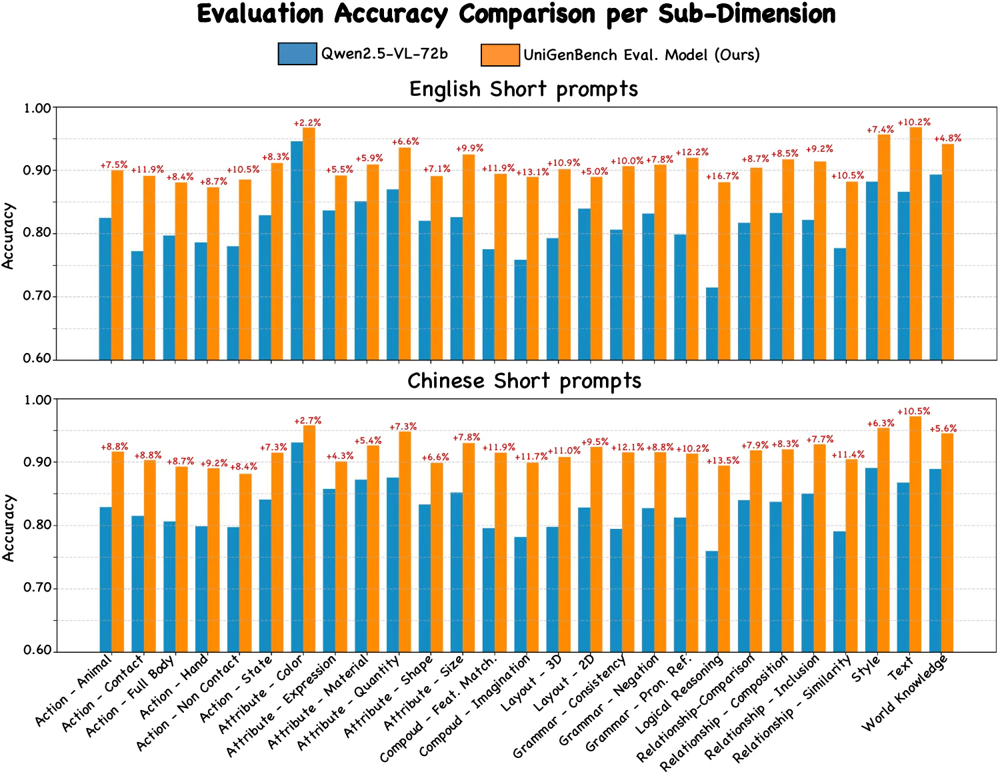
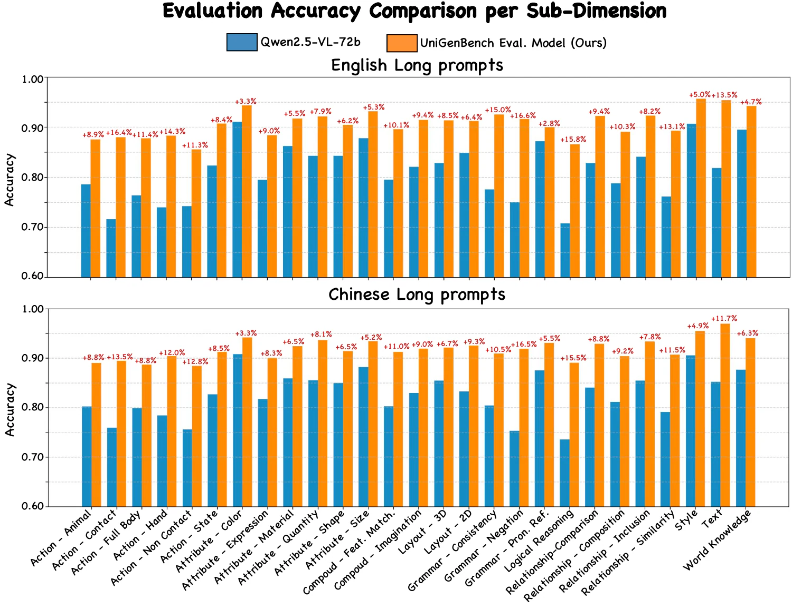
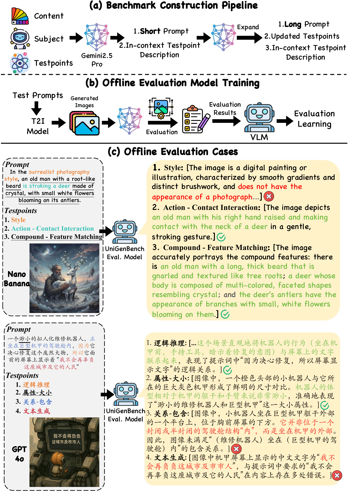
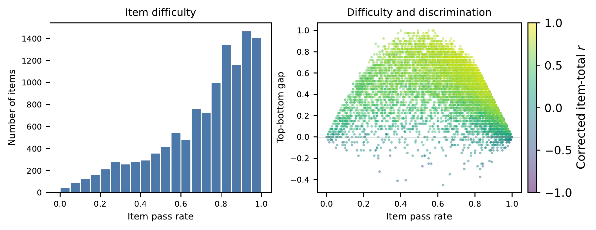
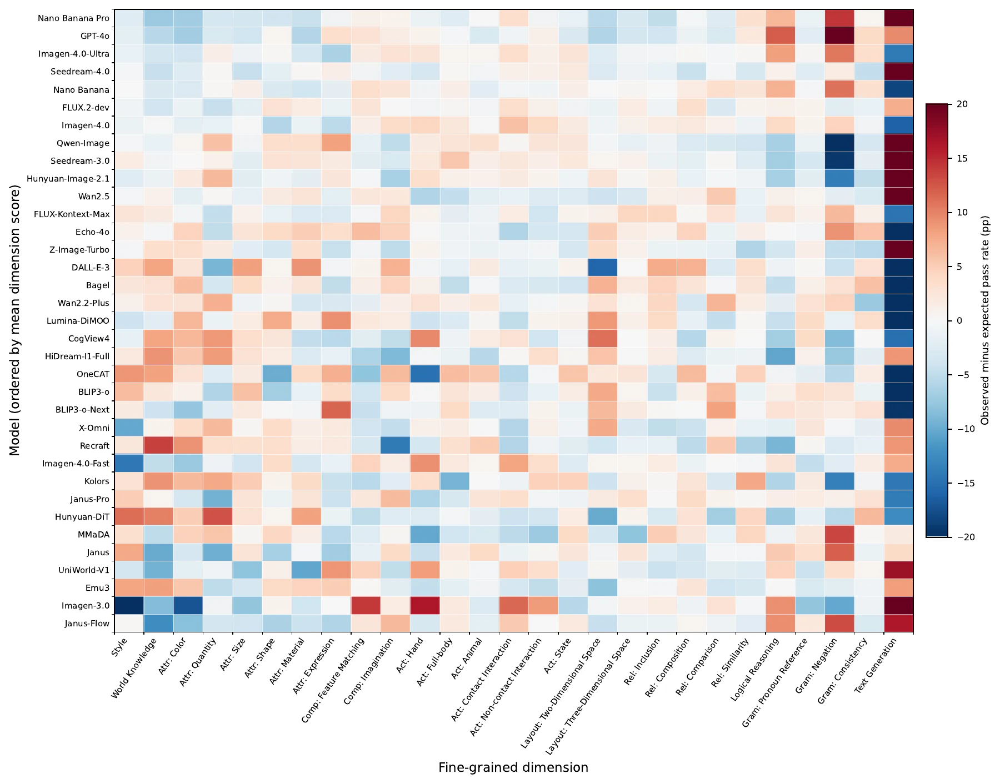

Benchmark overview
UniGenBench++ measures how faithfully text-to-image models follow individual requirements in a prompt. Each prompt is available in English and Chinese, in short and long forms.
- Prompt concepts
- 600
- Prompt themes
- 5
- Primary dimensions
- 10
- Fine-grained dimensions
- 27

Benchmark data and examples
Qualitative examples

Prompt and testpoint statistics

Benchmark results
GPT-4o-1.5 scored highest in all four settings, averaging 95.73 overall. Nano Banana Pro came second at 94.04, and FLUX.2-dev led the open models at 85.66.
Scores across all four settings
The 44 models below were evaluated in every setting. Overall is the equal-weight average of the four scores. EN and ZH denote English and Chinese. The best and second-best scores in each column are bold and underlined, respectively. Scroll to see all models and columns.
| Model | Availability | EN short | EN long | ZH short | ZH long | Overall |
|---|---|---|---|---|---|---|
| GPT-4o-1.5 | Closed | 95.77 | 95.41 | 95.62 | 96.12 | 95.73 |
| Nano Banana Pro | Closed | 92.72 | 94.20 | 93.82 | 95.42 | 94.04 |
| GPT-4o | Closed | 92.48 | 92.63 | 91.02 | 90.51 | 91.66 |
| Seedream-4.5 | Closed | 89.70 | 91.38 | 89.58 | 93.12 | 90.94 |
| FLUX-2-Max | Closed | 90.85 | 92.18 | 88.14 | 89.80 | 90.24 |
| FLUX-2-Flex | Closed | 89.35 | 90.43 | 87.62 | 89.19 | 89.15 |
| Seedream-4.0 | Closed | 87.35 | 89.77 | 87.31 | 90.35 | 88.69 |
| FLUX-2-Pro | Closed | 88.35 | 90.10 | 85.40 | 87.11 | 87.74 |
| Imagen-4.0-Ultra | Closed | 91.65 | 90.95 | 83.08 | 83.86 | 87.39 |
| FLUX.2-dev | Open | 84.76 | 90.31 | 81.44 | 86.12 | 85.66 |
| Nano Banana | Closed | 87.29 | 88.82 | 80.45 | 83.17 | 84.93 |
| Z-Image | Open | 78.10 | 86.77 | 81.69 | 89.17 | 83.93 |
| Imagen-4.0 | Closed | 85.84 | 85.34 | 79.52 | 79.90 | 82.65 |
| Qwen-Image | Open | 78.36 | 83.94 | 81.04 | 86.91 | 82.56 |
| Seedream-3.0 | Closed | 78.41 | 80.99 | 81.68 | 86.14 | 81.80 |
| Wan2.5 | Closed | 77.87 | 84.56 | 78.86 | 84.36 | 81.41 |
| Hunyuan-Image-2.1 | Open | 74.64 | 82.19 | 77.76 | 87.01 | 80.40 |
| FLUX.2-Klein-base-9b | Open | 79.35 | 86.45 | 73.81 | 81.41 | 80.25 |
| FLUX.2-Klein-9b | Open | 78.28 | 85.06 | 75.19 | 81.74 | 80.07 |
| LongCat-Image | Open | 73.54 | 81.28 | 75.97 | 83.14 | 78.48 |
| Z-Image-Turbo | Open | 71.40 | 80.72 | 74.18 | 83.69 | 77.50 |
| FLUX-Kontext-Max | Closed | 80.00 | 80.88 | 71.85 | 75.24 | 76.99 |
| Echo-4o | Open | 69.12 | 76.41 | 72.40 | 78.31 | 74.06 |
| GLM-Image | Open | 67.23 | 75.48 | 70.57 | 79.11 | 73.10 |
| DALL-E-3 | Closed | 68.85 | 70.82 | 67.93 | 71.16 | 69.69 |
| Bagel | Open | 59.91 | 71.26 | 65.69 | 75.75 | 68.15 |
| Wan2.2-Plus | Closed | 64.82 | 68.76 | 66.96 | 70.05 | 67.65 |
| OmniGen2 | Open | 63.09 | 71.39 | 63.20 | 70.75 | 67.11 |
| Lumina-DiMOO | Open | 71.12 | 71.81 | 58.35 | 63.80 | 66.27 |
| HiDream-I1-Full | Open | 71.36 | 74.25 | 50.65 | 50.70 | 61.74 |
| CogView4 | Open | 56.00 | 67.68 | 55.14 | 68.09 | 61.73 |
| OneCAT | Open | 58.28 | 62.80 | 56.77 | 61.40 | 59.81 |
| BLIP3-o | Open | 59.57 | 61.01 | 59.25 | 59.25 | 59.77 |
| Recraft | Closed | 62.63 | 60.93 | 57.67 | 56.90 | 59.53 |
| X-Omni | Open | 53.77 | 67.00 | 53.69 | 62.18 | 59.16 |
| BLIP3-o-Next | Open | 65.15 | 71.03 | 44.48 | 54.55 | 58.80 |
| Kolors | Open | 46.07 | 53.60 | 58.80 | 65.12 | 55.90 |
| Janus-Pro | Open | 61.36 | 71.11 | 30.83 | 60.21 | 55.88 |
| Hunyuan-DiT | Open | 51.38 | 54.88 | 53.36 | 55.57 | 53.80 |
| Janus | Open | 51.60 | 60.37 | 30.98 | 33.63 | 44.14 |
| MMaDA | Open | 41.35 | 40.10 | 44.00 | 50.61 | 44.02 |
| UniWorld-V1 | Open | 63.11 | 69.60 | 15.21 | 21.50 | 42.35 |
| Emu3 | Open | 45.42 | 50.95 | 33.91 | 35.95 | 41.56 |
| Janus-Flow | Open | 47.10 | 54.80 | 20.93 | 23.09 | 36.48 |
Evaluator validation
Agreement with human judgments
Five annotators labeled 1,200 prompt–image–testpoint triplets. Gemini-2.5-Pro agreed with the human majority on 86% of the triplets. The rankings of the 10 models in this study had a Spearman correlation of 0.96 (95% CI 0.89–0.99).
| Evaluator | Accuracy | Macro-F1 | Cohen’s κ | Coverage |
|---|---|---|---|---|
| Human annotator baseline | 94.8% | 0.89 | 0.78 | 97% |
| Qwen2.5-VL-72B | 76% | 0.60 | 0.21 | 100% |
| Offline evaluator | 83% | 0.78 | 0.57 | 100% |
| Gemini-2.5-Pro | 86% | 0.77 | 0.53 | 100% |
Automatic evaluators are compared with the five-annotator majority. The human baseline holds out one annotator at a time and scores cases where the other four form a strict majority.
Agreement with Gemini by dimension
The trained offline evaluator matches Gemini-2.5-Pro judgments more closely than the Qwen2.5-VL-72B baseline across the four prompt settings.


Benchmark construction and offline evaluator training

Capability diagnostics
Leading models score consistently well on style and world knowledge. Logical reasoning, grammar, composition, and text generation still show substantial differences.
Testpoint difficulty

Model capability profiles

BibTeX
@article{UniGenBench++,
title={UniGenBench++: A Unified Semantic Evaluation Benchmark for Text-to-Image Generation},
author={Wang, Yibin and Li, Zhimin and Zang, Yuhang and Bu, Jiazi and Zhou, Yujie and Xin, Yi and He, Junjun and Wang, Chunyu and Lu, Qinglin and Jin, Cheng and others},
journal={arXiv preprint arXiv:2510.18701},
year={2025}
}